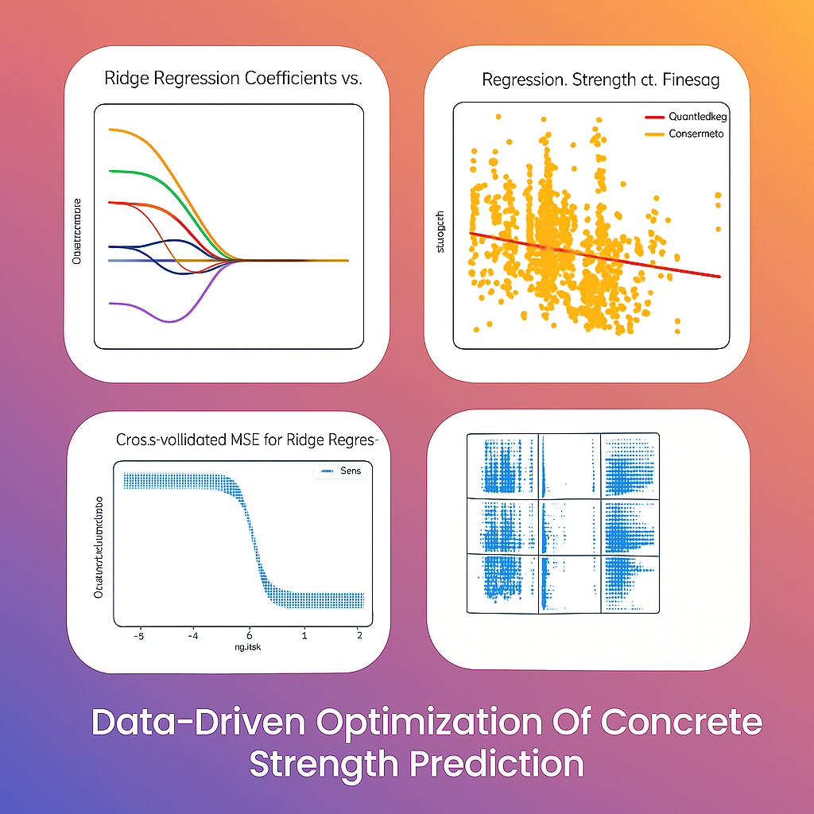

Predictive Modeling for Concrete Strength
Python
Streamlit
Machine Learning
GenAI
Ridge Regression
Decision Tree
LDA / QDA / KNN
Plotly
OpenRouter API
ReportLab
Overview
Built an end-to-end interactive analytics dashboard in Python and Streamlit to analyze and predict concrete compressive strength across 1,030 mix design samples spanning 8 material variables. The dashboard spans four modules - from exploratory KPI insights to real-time mix design prediction powered by GenAI recommendations via Google Gemini 2.5 Flash - and is designed to be both explainable and actionable for engineering and product decision-making.
Dashboard Modules
KPI Insights Explorer
Visualizes how each mix ingredient relates to compressive strength using
quantile binning. Bins keep sample sizes
balanced for fair comparison, with error bars (SEM) to show confidence per bin.
Users select any KPI and the number of bins to interactively explore trends.
Model Explorer
Four modeling lenses in one view: OLS scatter + trendline, standardized
coefficient bar charts for Linear and Ridge Regression,
an interactive Decision Tree (depth-3) visualization,
and a binary classification module (pass/fail against a user-defined MPa threshold)
with a confusion matrix and interpretation.
Predict Strength
Real-time mix design prediction tool with slider inputs for all 8 ingredients.
Uses a Ridge Regression (RidgeCV, 5-fold CV) model
trained on the dataset and outputs a gauge showing predicted vs target strength,
with a clear pass/fail indicator and margin.
GenAI Recommendations
Integrates Google Gemini 2.5 Flash via the
OpenRouter API to generate structured, engineering-appropriate recommendations
(executive summary, detailed adjustments, conclusion) grounded in the predicted
vs target gap and input values. Togglable with a rule-based fallback.
PDF Report Generation
Generates a downloadable one-page PDF report using ReportLab,
including prediction summary, input table (2-column layout), a cloud-safe gauge
visualization drawn natively in the PDF, and condensed GenAI recommendations.
Models Used
- Ridge Regression (RidgeCV) - primary prediction model, trained with 5-fold cross-validation across 50 alpha values on a 70/30 train-test split. Handles multicollinearity from correlated ingredients (slag, ash, cement) with stable, shrinkage-regularized coefficients.
- Multiple Linear Regression - full-dataset fit used for interpretable standardized coefficient comparisons in the Model Explorer. Confirms cement as the strongest positive driver and water as the strongest negative driver.
- Decision Tree Regressor (max depth 3) - rule-based model that surfaces non-linear thresholds and ingredient interactions. Visualized as a full tree plot for explainability.
- Classification models - Logistic Regression, LDA, QDA, and KNN applied to a binary strength threshold (pass/fail at user-defined MPa). Each includes a full confusion matrix with TP/FP/FN/TN breakdown and auto-generated interpretation of error type dominance.
Key Findings
- Cement is the strongest positive driver of compressive strength across all models. Increasing cement content consistently raises strength predictions.
- Water is the strongest negative driver. Higher water-to-cement ratio weakens the bond structure, reducing strength.
- Age is a strong positive factor, especially in early curing stages. Strength grows as hydration progresses over time.
- Superplasticizer shows moderate positive impact by enabling lower water content while maintaining workability - improving the water-to-cement ratio indirectly.
- Slag and ash contribute positively but are correlated with other variables, so their individual effect is best read via Ridge coefficients rather than simple correlation.